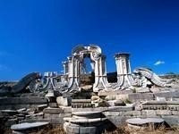

圆明园简介
圆明园
坐落在北京西郊海淀,与颐和园紧相毗邻,是清代封建帝王在150余年间所创建和经营的一座大型皇家宫苑。
圆明园始建于康熙46年（1707年）,由圆明、长春、万春(绮春)三园组成,有园林风景百余处，建筑面积逾16万平方米,比颐和园的整个范围还要大出近千亩。雍正、乾隆、嘉庆、道光、咸丰五朝皇帝，都曾长年居住在圆明园优游享乐，并于此举行朝会，处理政事。咸丰十年（1860年的10月）遭到英法联军的洗劫和焚毁，成为中国近代史上的一页屈辱史。
历史发展
最初是康熙皇帝赐给皇四子胤禛(即后来的雍正皇帝）的花园,在康熙四十六年即公元1707年时，园已初具规模。
雍正皇帝于1723年即位后，拓展原赐园，并在园南增建了正大光明殿和勤正殿以及内阁、六部、军机处诸值房。
乾隆皇帝在位60年，对圆明园岁岁营构，日日修华。至乾隆三十五年即1770年，圆明三园的格局基本形成。
嘉庆朝，主要对绮春园进行修缮和拓建，使之成为主要园居场所之一。

圆明园十二生肖兽首下落
兽首
去向
牛首
2000年4月30日，中国保利集团在佳士得拍卖行购得，现存放于保利艺术博物馆
猴首
2000年保利集团以818万港币拍得，现存北京保利艺术博物馆
虎首
2000年保利集团以1544万港币拍得，现存北京保利艺术博物馆
猪首
2003年，港澳爱国企业家何鸿燊以低于700万港币购入，后转赠保利集团
马首
2007年，何鸿燊以6910万港币购得，将其捐赠国家
龙、蛇、羊、鸡、狗五个兽首目前下落不明。